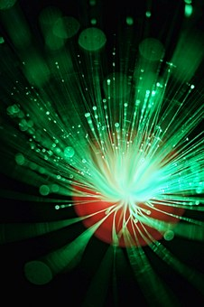
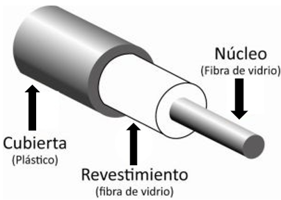

La fibra óptica permite la transmisión de señales luminosas. Las señales luminosas admiten frecuencias muy altas similares a los GHZ. la velocidad de transmisión de la fibra óptica es muy superior a la de los medios de transmisión que usan conductores metálicos (el cable de par trenzado o el cable coaxial). La fibra óptica permite una velocidad de transmisión experimental en laboratorio que sobrepasa los 50.000 Gbps (50 Tbps).
Dado su gran ancho de banda se pueden efectuar transmisiones de decenas de miles de llamadas telefónicas a través de una sola fibra óptica. En un principio, las redes de fibra óptica han utilizado un sistema de multiplexación por división en el tiempo (TDM) para efectuar sus transmisiones.
la fibra óptica ofrece una gran fiabilidad, siendo su tasa de error mínima ya que es insensible a las interferencias electromagnéticas externas. La atenuación en el cable de fibra óptica es menor que en el par trenzado o el coaxial; por lo que la distancia entre repetidores puede ser mayor, decenas de kilómetros como mínimo.

Un cable de fibra óptica tiene forma cilíndrica y está formado por tres secciones concéntricas: el núcleo, el revestimiento y la cubierta. El núcleo es la sección más interna, está formado por una o varias fibras muy finas de cristal o plástico. Su diámetro está entre 2 y 125µm (El grosor del cabello humano es de alrededor de 50µm). Cada fibra está rodeada por su propio revestimiento, se trata de otro cristal o plástico con propiedades ópticas distintas a las del núcleo. La separación entre el núcleo y el revestimiento actúa como un reflector perfecto confinando el haz de luz que de otra manera escaparía del núcleo. La capa más externa que envuelve a uno o varios revestimientos es la cubierta. La cubierta está hecha de plástico y otros materiales que proporcionan protección contra la humedad, aplastamientos y otros peligros.

existen varios tipos de fibra optica que trasmiten luz de diferentes maneras:
Fibra monomodo
La fibra es tan delgada que la luz se transmite en línea recta. El núcleo tiene un radio de 10µm y la cubierta de 125µm. La luz viaja por la fibra siguiendo un único camino. Permite la transmisión de señales con ancho de banda hasta 2GHz. Se utilizan normalmente en telefonía y televisión por cable.
Fibra multimodo de indice discreto o escalonado
La luz se transmite por el interior el núcleo incidiendo sobre su superficie interna, como si se tratara de un espejo. Las pérdidas de luz en este caso también son prácticamente nula. El núcleo tiene un diámetro de 100µm y la cubierta de 140µm. La luz suele viajar por varios caminos. Permite transmisiones de hasta 35 MHz. Se utiliza normalmente para transmisiones de distancias cortas.
fibra multimodo de indice gradual
La luz se propaga por el núcleo mediante una refracción gradual. Esto es debido a que el núcleo se construye con un índice de refracción que va en aumento desde el centro a los extremos. Suele tener mismo diámetro que las fibras multimodo de índice discreto. La luz suele viajar por varios caminos. Permite transmisiones de hasta 500 MHz. Se utiliza normalmente en redes de área local.
Frente a la velocidad de transmisión tan elevada de la fibra óptica, su principal inconveniente es su coste. En este coste se ha de considerar tanto el precio por metro de fibra, como el coste del montaje. El cable de fibra óptica no se puede doblar en exceso porque se puede romper y, las conexiones son muy costosas y complicadas.
Hay 3 maneras de hacer las conecciones de fibra optica son las siguientes:
Utilizando conectores
Cada tramo de fibra viene de fábrica con enchufes en los extremos. Esta forma de conectarlos es muy sencilla, pero adolece de una pérdida de entre un 10 y un 20% de la luz que circula a través de la conexión.
Realizando empalmes de la forma mecanica
Se realiza un corte cuidadoso del extremo de cada tramo y se unen ambos mediante una manga especial que los sujeta en su lugar. Se puede mejorar la alineación haciendo pasar luz por la unión y efectuando pequeños ajustes hasta alcanzar su posición idónea. Los empalmes mecánicos sufren de una pérdida de luz en torno al 10%
Fundiendo los dos extremos
Se realiza una fusión de los dos tramos para formar una conexión sólida. Este empalme es casi tan bueno como una fibra de hilo único, pero aún así existe un poco de atenuación.